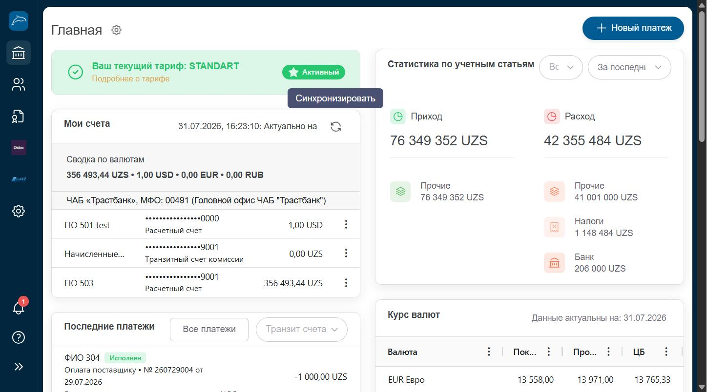

Главная страница (Дашборд)
Обзорная страница после входа в систему: остатки по счетам, статистика доходов и расходов, последние платежи и курсы валют.
Где находитсяОткрывается автоматически после авторизации, а также доступна по клику на пункт меню «Главная» в разделе «Банк» (первый пункт бокового меню).

Нажмите на изображение, чтобы увеличить его.
Из чего состоит страница
- 1Блок тарифаПоказывает текущий тарифный план компании (например STANDART) и его статус (Активный). Ссылка «Подробнее о тарифе» открывает описание условий обслуживания.
- 2Мои счетаСписок всех расчётных и транзитных счетов компании с остатками по каждой валюте. Значок обновления справа от даты позволяет вручную обновить остатки. Меню из трёх точек рядом со счётом открывает быстрые действия по счёту.
- 3Последние платежиСписок последних исходящих и входящих операций с переключателем «Все платежи» / «Транзит счета» и фильтром по конкретному счёту.
- 4Статистика по учётным статьямКруговые показатели «Приход» и «Расход» за выбранный период с разбивкой по категориям (Прочие, Налоги, Банк и т.д.). Выпадающие списки сверху позволяют выбрать счёт и период.
- 5Курс валютТаблица актуальных курсов покупки, продажи и курса ЦБ по основным валютам на текущую дату.
- 6Кнопка «Новый платеж»Расположена в правом верхнем углу на всех страницах раздела «Банк». Открывает модальное окно выбора типа платежа.
Пошагово
- После успешного входа система автоматически открывает страницу «Главная».
- Изучите блок «Мои счета», чтобы увидеть актуальные остатки по каждому счёту компании.
- При необходимости нажмите на иконку обновления, чтобы синхронизировать остатки с банком.
- Просмотрите статистику доходов/расходов, переключая период через выпадающий список «За последние...».
- Для перехода к новому платежу используйте кнопку «Новый платеж» в правом верхнем углу.
СоветВиджет «Мои счета» можно настраивать: в разделе «Все счета» есть чекбоксы «На дашборде», которые определяют, какие счета показывать на главной странице.
ВажноСуммы и остатки являются реальными операционными данными компании и не подлежат изменению через эту страницу — здесь только просмотр.